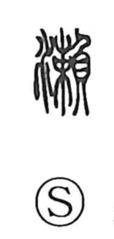

瀬

Uncategorized
Kun: se | On: se, rai
shallows ・ rapids ・ shoal ・ strait
Explanation
瀬 is a phono-semantic character built with the water element and the phonetic 賴/頼. Early sources gloss it as “water flowing over pebbles,” evoking the chattering, broken current that forms a river’s shallows and rapids. Shirakawa notes that 頼 itself seems to echo that lively sound, the same sound value that also appears in 籟, a bamboo pipe with three holes. Through this shared sound, both 瀬 and 籟 carry the On reading rai. From the concrete image of a stony, shallow run of water, the word extends to places where a channel narrows—hence Seto for a strait—and figuratively to a decisive brink, as in setogiwa.